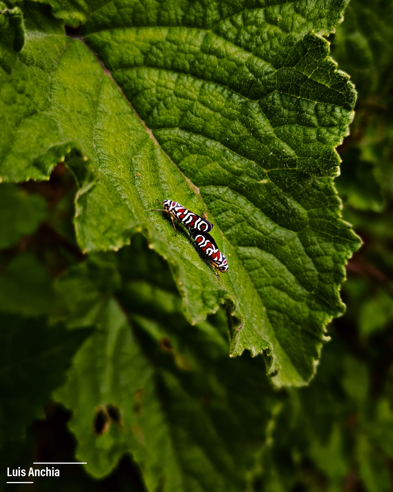

Foto
2022
Insectos
Hola, me llamo Luis y hablaremos un poco de mi experiencía en la fotografía como aficionado, no tengo estudios profesionales en el ambito, pero una gran fotografa nacional me enseño mucho de este mundo y he sido autodidacta en el tema, me encanta capturar los momentos en una fotografía y que la imagen hable por si sola, con diseño tengo estudios en el Cetav y carrera inconclusa en diseño, pero siempre autodidacta en el tema, en el cual soy un fan al diseño, donde me puedo expresar de una mejor manera.
Publicaciones recientes
24 Julio 2022
San José / Costa Rica
Siempre me ha gustado la manera en que la fotografía puede expresar los momentos diversos de la vida, imágenes que transmiten emociones y sentimientos, este amor dio inicio hace muchos años, cuando tomaba fotos random, de paisajes, flora, Fauna, atardeceres entre otros y note el agrado y pasión al hacerlo, he tenido la oportunidad de visitar muchos lugares en los cuales he aprovechado el momento de sacar fotografías y capturar un momento especial en cada viaje.
24 julio 2022
San José / Costa Rica
Desde jovén me ha gustado el dibujo y el diseñar, recuerdo el primer programa educativo que aprendi el cual fue "Micro mundos", tuve la oportunidad de estudiar diseño grafico y es una carrera que tengo pausada, tengo un titulo de diseño grafico por parte del Cetav, el diseño me permite expresarme con imagenes y crear las emociones que quiero representar y dar a conocer por medio de mis artes.
Trabajos realizados
Foto
2022
Insectos

Diseño
2022
American
Foto
2022
Flora
Foto
2022
Serpiente

Diseño
2022
Libro
Foto
2022
Aves